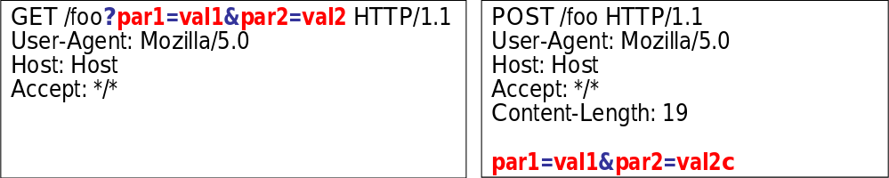

HTTP Parameter Pollution(HPP)
HPP attacks can be defined as the feasibility to override or add HTTP GET/POST parameters by injecting query string delimiters
It affects a building block of all web technologies thus server-side and client-side attacks exist- Exploiting HPP vulnerabilities, it may be possible to:
- Override existing hardcoded HTTP parameters
- Modify the application behaviors
- Access and, potentially exploit, uncontrollable variables
- Bypass input validation checkpoints and WAFs rules
Supplying multiple HTTP parameters with the same name may cause an application to interpret values in unanticipated ways. By exploiting these effects, an attacker may be able to bypass input validation, trigger application errors or modify internal variables values. As HTTP Parameter Pollution (in short HPP) affects a building block of all web technologies, server and client side attacks exist.
Current HTTP standards do not include guidance on how to interpret multiple input parameters with the same name. For instance, RFC 3986 simply defines the term Query String as a series of field-value pairs and RFC 2396 defines classes of reversed and unreserved query string characters. Without a standard in place, web application components handle this edge case in a variety of ways (see the table below for details).
By itself, this is not necessarily an indication of vulnerability. However, if the developer is not aware of the problem, the presence of duplicated parameters may produce an anomalous behavior in the application that can be potentially exploited by an attacker. As often in security, unexpected behaviors are a usual source of weaknesses that could lead to HTTP Parameter Pollution attacks in this case. To better introduce this class of vulnerabilities and the outcome of HPP attacks, it is interesting to analyze some real-life examples that have been discovered in the past.
The term Query Stringis commonly used to refer to the part between the “?” and the end of the URI
airs are separated by “&” or “;”
RFC 2396defines two classes of characters:
Unreserved: a-z, A-Z, 0-9 and _ . ! ~ * ' ( )
Reserved: ; / ? : @ & = + $ ,
GET and POST HTTP request

Query String meta characters are &, ?, #, ; , =and equivalent (e.g. using encoding)